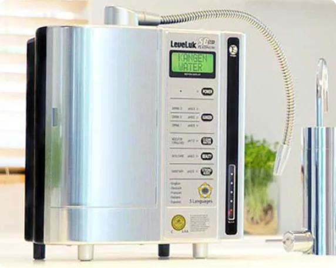

Sete placas de eletrólise
Câmara de eletrólise integrada com sete placas de titânio banhadas a platina.

7 placasIonizador de bancada · Enagic®
O clássico da cozinha, com voz em cinco idiomas. Ionizador de bancada com sete placas de titânio banhadas a platina, painel LCD grande e avisos de voz.
Diferenciais
Câmara de eletrólise integrada com sete placas de titânio banhadas a platina.
Leitura direta da seleção, com um botão para cada tipo de água.
Inglês, alemão, francês, italiano e espanhol.
O equipamento avisa quando chega a hora de trocar o filtro.
Para quem faz sentido
Ficha técnica
O LeveLuk SD501 Platinum é o modelo de referência da linha doméstica Kangen. Possui sete placas de titânio banhadas a platina em uma câmara de eletrólise integrada, painel LCD grande e avisos de voz em cinco idiomas: inglês, alemão, francês, italiano e espanhol. É instalado na cozinha e conectado à torneira.
| Placas de eletrólise | 7 placas de titânio banhadas a platina |
|---|---|
| Tipos de água | 5 (Kangen, Neutra, Beleza, Super Ácida, Super Alcalina) |
| Faixa de pH | 2.5 a 11.5, conforme a seleção |
| Produção | Cerca de 2 a 4 litros de Água Kangen por minuto |
| Painel | LCD grande |
| Avisos de voz | 5 idiomas (inglês, alemão, francês, italiano, espanhol) |
| Aviso de troca de filtro | Automático |
| Alimentação | Fonte bivolt |
| Instalação | Conectado à torneira da cozinha, sem obra na maioria dos casos |
| Troca de filtro | A cada cerca de 6.000 litros ou 1 ano de uso |
| Limpeza | Ciclo mensal com sal de limpeza eletrolítico próprio |
| Garantia | 5 anos de fábrica |
| Vida útil estimada | Até 25 anos com os cuidados recomendados |
Demonstração sem compromisso
Todo o atendimento é feito pelo WhatsApp. Chame no botão ao lado e uma pessoa confirma a disponibilidade para a sua cidade em Marília, Bauru e região.
Nossos produtos não se destinam a diagnosticar, tratar, curar ou prevenir qualquer doença.